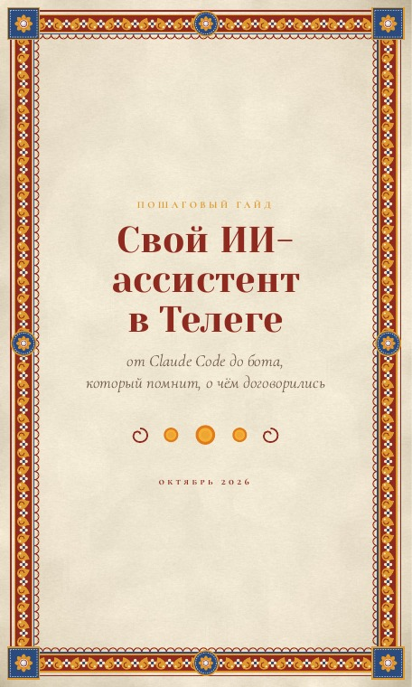

Бесплатный гайд · PDFСвой ИИ-ассистент в ТелегеПошаговый гайд: как собрать своего помощника на Claude Code.Скачать гайдПошаговый гайд · Обновлено 30 октября 2026Открыть PDF в браузереClaude: вход и блокировки